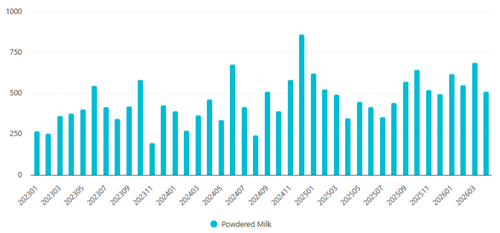
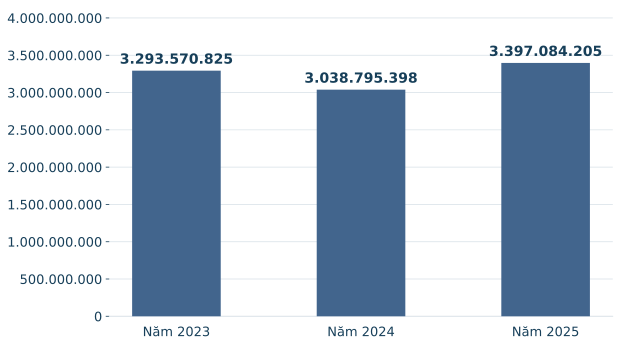
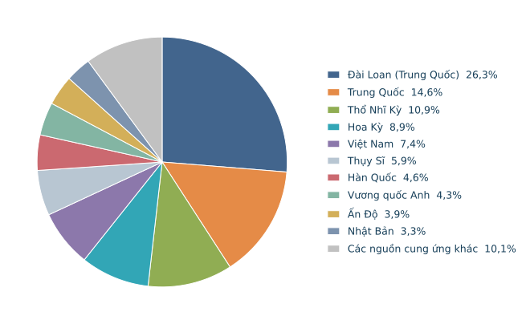
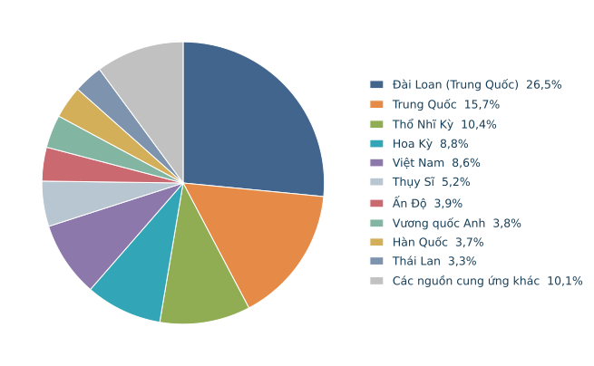
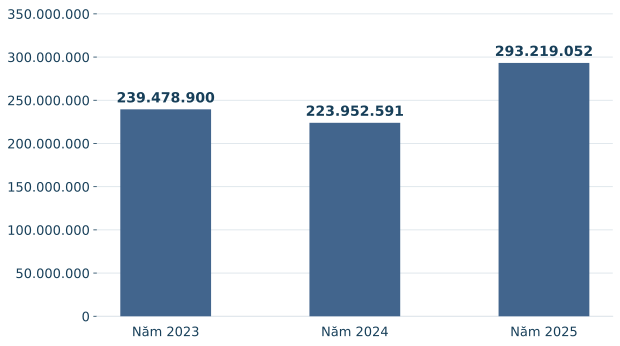
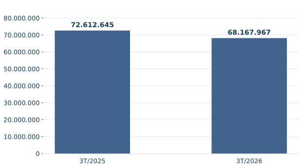

Gia hạn biện pháp phòng vệ thương mại đối với đường mía Thái Lan đến năm 2031
Bộ Công Thương vừa ban hành Quyết định số 1309/QĐ-BCT về kết quả rà soát cuối kỳ việc áp dụng biện pháp chống bán phá giá và chống trợ cấp đối với một số sản phẩm đường mía có xuất xứ từ Thái Lan (mã vụ việc ER01.AD13-AS01), đồng thời ban hành Quyết định số 1310/QĐ-BCT gia hạn biện pháp chống lẩn tránh biện pháp phòng vệ thương mại đối với một số sản phẩm đường mía nhập khẩu.
Trước đó, ngày 15/6/2021, Bộ Công Thương đã áp dụng biện pháp chống bán phá giá và chống trợ cấp đối với đường mía nhập khẩu từ Thái Lan theo Quyết định số 1578/QĐ-BCT. Tiếp đó, ngày 1/8/2022, Bộ ban hành Quyết định số 1514/QĐ-BCT áp dụng biện pháp chống lẩn tránh đối với đường mía có xuất xứ từ Campuchia, Indonesia, Lào, Malaysia và Myanmar nhằm ngăn chặn hành vi né tránh các biện pháp phòng vệ thương mại đang có hiệu lực.
Kết quả rà soát cuối kỳ cho thấy sau 5 năm áp dụng, các biện pháp phòng vệ thương mại đã mang lại nhiều tác động tích cực đối với ngành mía đường trong nước. Lượng đường nhập khẩu từ Thái Lan giảm mạnh từ khoảng 924 nghìn tấn xuống còn 82 nghìn tấn trong niên vụ 2022/2023 và 274 nghìn tấn trong niên vụ 2024/2025. Môi trường cạnh tranh trên thị trường đường trong nước được cải thiện đáng kể, góp phần hạn chế tình trạng bán phá giá và trợ cấp từ hàng nhập khẩu.
Nhờ đó, sản xuất đường trong nước từng bước phục hồi và phát triển bền vững. Sản lượng đường niên vụ 2024/2025 đạt hơn 1,2 triệu tấn, tăng khoảng 1,7 lần so với niên vụ 2020/2021. Doanh thu và lợi nhuận của ngành lần lượt tăng 1,63 lần và 2,49 lần so với thời điểm trước khi áp dụng biện pháp.
Cùng với sự phục hồi của ngành chế biến, vùng nguyên liệu mía cũng được mở rộng đáng kể. Diện tích thu hoạch mía tăng gần 50%, từ 128.666 ha lên 192.660 ha, trong khi sản lượng mía tăng từ 6,74 triệu tấn lên 12,43 triệu tấn trong giai đoạn 2020/2021 – 2024/2025. Năng suất bình quân tăng từ 60,7 tấn/ha lên 73,3 tấn/ha, phản ánh hiệu quả của việc tái đầu tư giống mới, ứng dụng kỹ thuật canh tác tiên tiến và đẩy mạnh cơ giới hóa trong sản xuất.
Các biện pháp phòng vệ thương mại cũng góp phần bảo đảm sinh kế cho người trồng mía tại nhiều địa phương. Số hộ nông dân tham gia trồng mía tăng từ khoảng 151 nghìn hộ lên 225 nghìn hộ, trong đó phần lớn là đồng bào dân tộc thiểu số và các hộ dân tại khu vực còn nhiều khó khăn. Thu nhập của người trồng mía được cải thiện nhờ giá thu mua ổn định hơn cùng các chính sách hỗ trợ về giống và vốn từ các nhà máy đường.
Tuy nhiên, kết quả điều tra cũng cho thấy nguy cơ tái diễn thiệt hại đối với ngành sản xuất trong nước nếu các biện pháp hiện hành bị chấm dứt. Cơ quan điều tra xác định hàng hóa nhập khẩu từ Thái Lan vẫn đang có hành vi bán phá giá và được trợ cấp trong thời kỳ rà soát. Đồng thời, khả năng tái diễn hành vi này là rất lớn nếu biện pháp phòng vệ thương mại không còn hiệu lực. Trong hai niên vụ gần đây, lượng đường nhập khẩu đã có xu hướng gia tăng trở lại khi giá đường Thái Lan giảm mạnh, tạo ra khoảng cách đáng kể về giá và gây áp lực cạnh tranh đối với ngành sản xuất trong nước.
Trên cơ sở các kết luận điều tra, Bộ Công Thương xác định việc chấm dứt các biện pháp chống bán phá giá và chống trợ cấp có thể dẫn đến nguy cơ tái diễn hoặc tiếp tục hành vi bán phá giá, trợ cấp và gây thiệt hại đáng kể cho ngành mía đường Việt Nam. Vì vậy, Bộ đã quyết định gia hạn các biện pháp này thêm 5 năm, đến hết ngày 15/6/2031.
Song song với đó, nhằm bảo đảm hiệu quả thực thi các biện pháp đang áp dụng, Bộ Công Thương cũng quyết định gia hạn biện pháp chống lẩn tránh phòng vệ thương mại đối với một số sản phẩm đường mía. Thời hạn áp dụng biện pháp chống lẩn tránh sẽ tương ứng với thời hạn hiệu lực của các biện pháp chống bán phá giá và chống trợ cấp vừa được gia hạn.
Theo Bộ Công Thương, sau khi các quyết định có hiệu lực, cơ quan quản lý sẽ tiếp tục phối hợp với các đơn vị liên quan tăng cường kiểm tra, giám sát tình hình nhập khẩu và việc thực thi các biện pháp phòng vệ thương mại, bảo đảm môi trường cạnh tranh lành mạnh, góp phần phát triển bền vững ngành mía đường Việt Nam trong thời gian tới.
TIN TRONG NƯỚC
Tổ chức tham vấn công khai vụ việc điều tra chống lẩn tránh biện pháp phòng vệ thương mại đối với thép cán nóng nhập khẩu từ Trung Quốc
Cục Phòng vệ thương mại (Bộ Công Thương) vừa thông báo tổ chức buổi tham vấn công khai trong khuôn khổ vụ việc điều tra áp dụng biện pháp chống lẩn tránh biện pháp phòng vệ thương mại đối với một số sản phẩm thép cán nóng có xuất xứ từ Cộng hòa nhân dân Trung Hoa (mã số vụ việc AC03.AD20).
Việc tổ chức tham vấn được thực hiện theo quy định tại Điều 70 Luật Quản lý ngoại thương năm 2017 và Điều 14 Nghị định số 86/2025/NĐ-CP của Chính phủ quy định chi tiết một số điều của Luật Quản lý ngoại thương về các biện pháp phòng vệ thương mại.
Theo kế hoạch, buổi tham vấn sẽ diễn ra từ 9 giờ đến 12 giờ ngày 3/7/2026 tại trụ sở Bộ Công Thương, số 54 Hai Bà Trưng, phường Cửa Nam, Hà Nội. Chương trình được tổ chức theo hình thức kết hợp trực tiếp và trực tuyến nhằm tạo điều kiện thuận lợi cho các bên liên quan tham gia và trình bày ý kiến.
Cục Phòng vệ thương mại cho biết ngôn ngữ sử dụng chính thức tại buổi tham vấn là tiếng Việt. Trường hợp các bên liên quan sử dụng ngôn ngữ khác, các bên có trách nhiệm bố trí phiên dịch sang tiếng Việt và cung cấp bản dịch tiếng Việt đối với các tài liệu liên quan. Các bên tham gia phải bảo đảm tính chính xác, trung thực của nội dung dịch thuật và chịu trách nhiệm trước pháp luật về các thông tin đã cung cấp.
Để tham gia buổi tham vấn, các bên liên quan cần gửi đăng ký tham gia trước ngày 26/6/2026. Trường hợp có nội dung tham vấn hoặc ý kiến trình bày tại phiên họp, các tài liệu này cũng phải được gửi cho Cơ quan điều tra trước thời hạn nêu trên.
Theo quy định, hồ sơ đăng ký tham gia và các tài liệu liên quan phải được nộp thông qua Hệ thống tiếp nhận hồ sơ phòng vệ thương mại trực tuyến (TRAV Online) tại địa chỉ https://online.trav.gov.vn. Cơ quan điều tra chỉ xem xét các đăng ký được tiếp nhận trong thời hạn quy định.
Bên cạnh việc nộp hồ sơ trực tuyến, sau khi hoàn tất thủ tục trên hệ thống TRAV Online, các doanh nghiệp và bên liên quan có thể gửi thêm bản đăng ký hoặc nội dung tham vấn bằng văn bản hoặc thư điện tử tới Cục Phòng vệ thương mại để phục vụ công tác tổng hợp và xử lý thông tin.
Buổi tham vấn công khai là một bước quan trọng trong quá trình điều tra, tạo cơ hội để các bên liên quan trình bày quan điểm, cung cấp thông tin, chứng cứ và bảo vệ quyền, lợi ích hợp pháp của mình trước khi Cơ quan điều tra xem xét, đánh giá toàn diện các nội dung của vụ việc theo quy định pháp luật.
TIN TRONG NƯỚC
Niu Di-lân khởi xướng điều tra tự vệ toàn cầu đối với một số sản phẩm thanh nhôm định hình nhập khẩu
Ngày 28/5/2026, Bộ trưởng Bộ Thương mại và Tiêu dùng Niu Di-lân đã chính thức khởi xướng điều tra áp dụng biện pháp tự vệ toàn cầu đối với một số sản phẩm thanh nhôm định hình nhập khẩu. Quyết định được ban hành trên cơ sở đề xuất của Bộ Kinh doanh, Đổi mới và Việc làm Niu Di-lân (MBIE) sau khi cơ quan này xem xét hồ sơ yêu cầu từ ngành sản xuất trong nước.
Sản phẩm bị điều tra bao gồm các mặt hàng thanh nhôm định hình thuộc mã HS 7604.21.00 00B (thanh, que và cấu kiện định hình rỗng bằng hợp kim nhôm) và mã HS 7604.29.09 00F (các loại thanh, que và cấu kiện định hình bằng hợp kim nhôm khác). Các sản phẩm này có thể ở dạng chưa gia công hoặc đã qua các công đoạn gia công cơ khí, anod hóa, sơn hoặc phủ bề mặt.
Theo hồ sơ vụ việc, nguyên đơn cho rằng lượng nhập khẩu thanh nhôm định hình vào Niu Di-lân đã gia tăng đáng kể trong giai đoạn 2023–2025. Tỷ lệ nhập khẩu so với sản lượng sản xuất trong nước tăng từ 50% lên 64%, trong khi thị phần hàng nhập khẩu tăng từ 33% lên 39%. Ngành sản xuất nội địa lập luận rằng sự gia tăng nhập khẩu này là hệ quả của các diễn biến không lường trước được trên thị trường quốc tế, bao gồm những thay đổi trong chính sách thương mại và chính sách công nghiệp của một số quốc gia.
Bên cạnh đó, đơn kiện cũng đưa ra các bằng chứng cho thấy hàng nhập khẩu đã gây thiệt hại nghiêm trọng cho ngành sản xuất trong nước thông qua việc tác động tiêu cực đến giá bán, sản lượng, doanh số, thị phần, khả năng sinh lời, năng suất lao động và tình hình việc làm của các doanh nghiệp sản xuất nhôm định hình tại Niu Di-lân.
Theo thông báo của MBIE, Úc và Xinh-ga-po sẽ được loại trừ hoàn toàn khỏi phạm vi điều tra cũng như quá trình đánh giá thiệt hại, phù hợp với các cam kết trong các hiệp định thương mại tự do song phương mà Niu Di-lân đang thực thi với hai đối tác này. Niu Di-lân cũng sẽ xem xét các nghĩa vụ tương tự trong các hiệp định thương mại tự do khác nếu thấy cần thiết.
Về lộ trình xử lý vụ việc, MBIE dự kiến hoàn thiện và trình báo cáo điều tra lên Bộ trưởng Bộ Thương mại và Tiêu dùng vào cuối tháng 9/2026, tương đương khoảng bốn tháng kể từ ngày khởi xướng. Trên cơ sở kết quả điều tra, Bộ trưởng có thể xem xét áp dụng biện pháp tự vệ tạm thời hoặc biện pháp tự vệ chính thức nếu các điều kiện theo quy định của Đạo luật Thương mại Niu Di-lân về các biện pháp tự vệ năm 2014 được đáp ứng.
Trong thời gian điều tra, MBIE sẽ phát hành bảng câu hỏi và các tài liệu liên quan để thu thập thông tin từ các bên liên quan. Các nhà sản xuất, xuất khẩu, nhập khẩu, người sử dụng sản phẩm, các hiệp hội ngành hàng và cơ quan chính phủ nước ngoài đều có thể đăng ký tham gia vụ việc, nộp ý kiến và cung cấp chứng cứ nhằm bảo vệ quyền và lợi ích hợp pháp của mình.
Trước diễn biến trên, Cục Phòng vệ thương mại khuyến nghị các hiệp hội và doanh nghiệp Việt Nam có hoạt động sản xuất, xuất khẩu nhôm định hình sang Niu Di-lân chủ động rà soát mã HS và kim ngạch xuất khẩu trong giai đoạn 2023–2025, đồng thời đăng ký tham gia với tư cách bên liên quan để theo dõi sát diễn biến điều tra. Doanh nghiệp cũng cần chuẩn bị nguồn lực để trả lời các bản câu hỏi điều tra, cung cấp thông tin theo yêu cầu và tham gia các phiên điều trần nhằm bảo vệ lợi ích của mình trong trường hợp vụ việc có ảnh hưởng đến hoạt động xuất khẩu sang thị trường Niu Di-lân.
TIN NƯỚC NGOÀI
Nhật Bản điều tra chống bán phá giá đối với một số sản phẩm thép nhập khẩu từ Trung Quốc, Hàn Quốc và Đài Loan (Trung Quốc)
Nhật Bản vừa khởi xướng điều tra chống bán phá giá đối với một số sản phẩm thép dẹt nhập khẩu từ Trung Quốc, Hàn Quốc và Đài Loan (Trung Quốc), trong bối cảnh ngành thép toàn cầu tiếp tục đối mặt với tình trạng dư thừa công suất và cạnh tranh ngày càng gia tăng trên thị trường quốc tế.
Theo thông báo của Bộ Kinh tế, Thương mại và Công nghiệp Nhật Bản (METI) và Bộ Tài chính Nhật Bản, các sản phẩm thuộc phạm vi điều tra là nhóm thép dẹt, được sử dụng rộng rãi trong nhiều ngành công nghiệp như sản xuất ô tô, hàng tiêu dùng, cơ khí chế tạo, thiết bị công nghiệp và bao bì.
Vụ việc được khởi xướng trên cơ sở đề nghị của các doanh nghiệp sản xuất thép lớn của Nhật Bản, trong đó có Nippon Steel Corporation và JFE Steel Corporation. Các doanh nghiệp này cho rằng hàng hóa nhập khẩu từ các nước và vùng lãnh thổ nêu trên đang được bán tại thị trường Nhật Bản với giá thấp hơn đáng kể so với giá trị thông thường, gây thiệt hại cho ngành sản xuất trong nước.
Trong đơn yêu cầu điều tra nộp vào tháng 02/2026, các nhà sản xuất thép Nhật Bản cáo buộc một số sản phẩm thuộc phạm vi điều tra được bán tại Nhật Bản với mức giá thấp hơn tới 50% so với giá trị thông thường.
Ông Masayuki Hirose, Chủ tịch Liên đoàn Sắt thép Nhật Bản (JISF), cho rằng trong bối cảnh áp lực cạnh tranh từ hàng nhập khẩu ngày càng gia tăng, việc áp dụng các biện pháp phòng vệ thương mại phù hợp để bảo vệ ngành sản xuất trong nước đang trở nên cấp thiết đối với Nhật Bản. Trước đó, trong năm 2025, nước này cũng đã khởi xướng điều tra đối với một số sản phẩm thép phủ và thép không gỉ nhập khẩu từ một số quốc gia và vùng lãnh thổ, trong đó có các đối tượng đang bị điều tra trong vụ việc hiện nay.
Theo giới phân tích, động thái của Nhật Bản phản ánh xu hướng gia tăng sử dụng các biện pháp phòng vệ thương mại trên toàn cầu đối với ngành thép trong bối cảnh tình trạng dư thừa công suất vẫn tiếp diễn. Trung Quốc hiện là quốc gia sản xuất thép lớn nhất thế giới và đã đẩy mạnh xuất khẩu trong những năm gần đây nhằm bù đắp sự suy giảm nhu cầu trong nước. Điều này đã làm gia tăng áp lực cạnh tranh đối với các nhà sản xuất thép tại nhiều khu vực, từ châu Á đến châu Âu và Mỹ Latinh, qua đó thúc đẩy nhiều quốc gia tăng cường sử dụng công cụ phòng vệ thương mại để bảo vệ ngành sản xuất trong nước.
Trước đó, vào tháng 02/2026, Trung Quốc và Hàn Quốc đã đạt được thỏa thuận cam kết giá nhằm giải quyết một vụ điều tra chống bán phá giá do Hàn Quốc khởi xướng. Trong khi đó, Úc đã áp dụng thuế chống bán phá giá lên tới 82% đối với sản phẩm thép cuộn cán nóng nhập khẩu từ Trung Quốc vào tháng 4/2026. Thổ Nhĩ Kỳ cũng áp dụng thuế chống bán phá giá ở mức 3,95% đối với một số sản phẩm thép nhập khẩu từ Trung Quốc kể từ tháng 12/2025.
Theo thông báo của các cơ quan chức năng Nhật Bản, cuộc điều tra dự kiến sẽ được hoàn tất trong vòng một năm kể từ ngày khởi xướng.
Tổng hợp từ taipeitimes.com
TIN NƯỚC NGOÀI
Mê-hi-cô đề nghị Hoa Kỳ gỡ bỏ hạn chế nhập khẩu đường, cân nhắc điều tra chống bán phá giá si-rô fructose
Ngày 2/6/2026, ông Juan Cortina, đại diện Hội đồng Nông nghiệp Quốc gia Mê-hi-cô (CNA), cho biết trong những năm gần đây Hoa Kỳ đã áp dụng cơ chế quản lý nhập khẩu mới đối với đường nhập khẩu từ Mê-hi-cô. Theo đó, lượng đường xuất khẩu vượt hạn ngạch được phân bổ sẽ phải chịu thuế quan, làm giảm đáng kể khả năng tiếp cận thị trường Hoa Kỳ của ngành đường Mê-hi-cô.
Theo ông Juan Cortina, trước khi các biện pháp phòng vệ thương mại được áp dụng, lượng đường Mê-hi-cô xuất khẩu sang Hoa Kỳ trung bình đạt khoảng 1 triệu tấn mỗi năm. Tuy nhiên, hạn ngạch xuất khẩu năm 2026 chỉ còn khoảng 180.000 tấn.
Theo các doanh nghiệp ngành đường Mê-hi-cô cho rằng việc lượng đường xuất khẩu sang Hoa Kỳ giảm mạnh trong những năm gần đây đã làm gia tăng nguồn cung cấp trên thị trường trong nước. Phần sản lượng dư thừa buộc các doanh nghiệp phải chuyển hướng sang các thị trường xuất khẩu khác với mức giá thấp hơn đáng kể so với giá bán tại thị trường Hoa Kỳ, việc Hoa Kỳ áp dụng cơ chế "nhập khẩu trong tương lai chịu thuế" do Hoa Kỳ áp dụng đã làm thu hẹp đáng kể thị phần của đường Mê-hi-cô tại thị trường Hoa Kỳ. Trong khi đó, Hoa Kỳ vẫn tiếp tục nhập khẩu đường từ các nguồn cung khác và chấp nhận áp dụng thuế đối với các lô hàng vượt ngưỡng quy định, làm giảm khả năng cạnh tranh.
Tranh chấp thương mại trong ngành đường giữa Hoa Kỳ và Mê-hi-cô đã kéo dài trong nhiều năm. Trước năm 2014, mặt hàng đường được hưởng cơ chế tiếp cận thị trường tương đối tự do trong khuôn khổ Hiệp định Thương mại Tự do Bắc Mỹ (NAFTA). Tuy nhiên, sau khi ngành sản xuất đường Hoa Kỳ cáo buộc đường nhập khẩu từ Mê-hi-cô được bán phá giá và nhận trợ cấp, Hoa Kỳ đã áp dụng các thỏa thuận đình chỉ điều tra, theo đó thiết lập cơ chế hạn ngạch xuất khẩu và mức giá tham chiếu tối thiểu đối với đường Mê-hi-cô xuất khẩu vào thị trường Hoa Kỳ.
Ở chiều ngược lại, trước áp lực từ ngành sản xuất trong nước và tình trạng gia tăng nhập khẩu làm suy giảm giá đường trong nước, Mê-hi-cô cũng đã tăng cường các biện pháp bảo vệ thị trường. Năm 2025, nước này ban hành biểu thuế nhập khẩu mới đối với đường và các sản phẩm si-rô nhằm hỗ trợ ngành sản xuất trong nước và hạn chế tác động bất lợi từ hàng hóa nhập khẩu.
Theo quy định hiện hành, Mê-hi-cô áp dụng mức thuế nhập khẩu 156% đối với một số loại đường và si-rô, đồng thời áp thuế 210,44% đối với đường lỏng tinh luyện.
Ông Juan Cortina cho biết Mê-hi-cô mong muốn xây dựng một thị trường chung về đường với Hoa Kỳ, dựa trên các quy tắc thương mại thống nhất và cơ chế kiểm soát phù hợp nhằm ngăn chặn đường từ các nước thứ ba được xuất khẩu vào Hoa Kỳ nhưng vẫn bị tính vào hạn ngạch của Mê-hi-cô.
Liên quan đến tranh chấp kéo dài đối với si-rô ngô hàm lượng fructose cao (hay còn gọi là đường lỏng HFCS) nhập khẩu từ Hoa Kỳ, ông Juan Cortina cho biết ngành đường Mê-hi-cô vẫn ưu tiên tìm kiếm giải pháp thông qua đàm phán. Tuy nhiên, nếu không đạt được kết quả, ngành này đang chuẩn bị hồ sơ để khởi xướng điều tra chống bán phá giá đối với mặt hàng fructose nhập khẩu từ Hoa Kỳ.
Theo ông Juan Cortina, việc si-rô fructose của Hoa Kỳ được miễn thuế khi xuất khẩu vào Mê-hi-cô đã tạo ra sự mất cân bằng trên thị trường chất tạo ngọt, không phù hợp với các cam kết thương mại giữa hai nước.
Dự kiến trong tuần tới, đại diện CNA sẽ tham gia các cuộc họp tại Washington trong khuôn khổ rà soát Hiệp định Hoa Kỳ - Mê-hi-cô - Canada (USMCA).
Trong khi đó, Chủ tịch CNA Jorge Esteve cho biết ngành đường Mê-hi-cô đang đẩy mạnh đa dạng hóa thị trường xuất khẩu nhằm giảm sự phụ thuộc vào thị trường Hoa Kỳ và hạn chế các rủi ro phát sinh từ những thay đổi trong chính sách thương mại giữa hai nước.
Tổng hợp từ reuters.com
TIN NƯỚC NGOÀI
Đài Loan (Trung Quốc) áp thuế chống bán phá giá tạm thời đối với thép điện nhập khẩu từ Trung Quốc và Hàn Quốc
Cơ quan Hải quan thuộc Cơ quan quản lý Tài chính Đài Loan (Trung Quốc) vừa thông báo sẽ áp dụng thuế chống bán phá giá tạm thời đối với một số sản phẩm thép điện nhập khẩu từ Trung Quốc và Hàn Quốc kể từ ngày 08/6/2026. Biện pháp chống bán phá giá tạm thời sẽ có hiệu lực trong thời gian 4 tháng nhằm ngăn ngừa thiệt hại tiếp tục xảy ra đối với ngành sản xuất trong nước trong thời gian cơ quan điều tra hoàn tất quá trình điều tra vụ việc.
Theo kết luận sơ bộ, Đài Loan (Trung Quốc) áp dụng mức thuế chống bán phá giá tạm thời 45,68% đối với POSCO và một số doanh nghiệp xuất khẩu liên quan của Hàn Quốc. Các doanh nghiệp Hàn Quốc khác không được xác định mức thuế riêng sẽ chịu mức thuế toàn quốc là 49,98%. Đối với Trung Quốc, mức thuế chống bán phá giá tạm thời được áp dụng thống nhất ở mức 26,44% đối với tất cả các nhà sản xuất và xuất khẩu thuộc phạm vi điều tra.
Kết quả điều tra sơ bộ của Cơ quan quản lý Tài chính và Cơ quan quản lý Kinh tế Đài Loan (Trung Quốc) cho thấy sản phẩm thép điện nhập khẩu từ Trung Quốc và Hàn Quốc có hành vi bán phá giá tại thị trường Đài Loan (Trung Quốc), đồng thời gây thiệt hại đáng kể cho ngành sản xuất thép điện trong nước. Trên cơ sở đó, cơ quan chức năng quyết định áp dụng biện pháp chống bán phá giá tạm thời để bảo vệ ngành sản xuất trong nước trong thời gian tiếp tục điều tra.
Theo quy định về phòng vệ thương mại của Đài Loan (Trung Quốc), Cơ quan quản lý Tài chính sẽ ban hành kết luận cuối cùng về hành vi bán phá giá trong vòng 60 ngày kể từ khi áp dụng biện pháp chống bán phá giá tạm thời. Trường hợp kết luận cuối cùng xác nhận có hành vi bán phá giá, ngành sản xuất trong nước bị thiệt hại hoặc bị đe dọa gây thiệt hại đáng kể do hàng hóa nhập khẩu bị bán phá giá, cơ quan chức năng sẽ xem xét áp dụng thuế chống bán phá giá chính thức đối với sản phẩm liên quan.
Tổng hợp từ taiwannews.com
TIN NƯỚC NGOÀI
Bra-xin phê duyệt áp dụng biện pháp chống bán phá giá đối với sữa bột nhập khẩu từ Ác-hen-ti-na và U-ru-goay
Cơ quan Ngoại thương Bra-xin (Gecex) đã phê duyệt việc áp dụng các biện pháp chống bán phá giá đối với sản phẩm sữa bột nhập khẩu từ Ác-hen-ti-na và U-ru-goay trong cuộc họp thường kỳ diễn ra ngày 28/5/2026. Tuy nhiên, các biện pháp này sẽ chưa được áp dụng ngay lập tức.
Biểu đồ dưới đây thể hiện khối lượng sữa bột nhập khẩu hàng tháng của Brazil bằng xe công-ten-nơ qua đường biển, theo dữ liệu của Datamar:
Biểu đồ khối lượng sữa bột nhập khẩu
(Từ tháng 1/2023 đến tháng 4/2026)

Nguồn: DataLiner
Theo kết quả điều tra được khởi xướng từ cuối năm 2024, cơ quan chức năng Bra-xin xác định đã tồn tại hành vi bán phá giá đối với sữa bột nhập khẩu từ Ác-hen-ti-na và U-ru-goay. Các bộ, ngành tham gia Gecex ủng hộ quyết định áp dụng biện pháp phòng vệ thương mại nhằm bảo vệ ngành sản xuất sữa trong nước.
Biện pháp phòng vệ thương mại được xem xét áp dụng dưới hình thức áp thuế chống bán phá giá hoặc khoản phụ thu đối với hàng hóa nhập khẩu. Tuy nhiên, việc thực thi sẽ phụ thuộc vào một đợt đánh giá bổ sung của Gecex và hiện chưa có thời gian cụ thể cho quá trình xem xét này.
Việc trì hoãn áp dụng biện pháp phòng vệ thương mại được thực hiện theo đề xuất của Bộ Kế hoạch và Ngân sách Bra-xin nhằm đánh giá tác động đối với giá thực phẩm và lạm phát trong nước. Chính phủ Bra-xin lo ngại rằng việc áp dụng ngay các biện pháp chống bán phá giá có thể làm tăng giá các sản phẩm sữa đối với người tiêu dùng, đặc biệt trong bối cảnh nước này đang bước vào giai đoạn chuẩn bị cho bầu cử.
Các bên liên quan đều nhất trí về tầm quan trọng của các biện pháp chống bán phá giá đối với chuỗi sản xuất sữa nội địa, nhất là đối với các hộ chăn nuôi và nhà sản xuất quy mô nhỏ. Tuy nhiên, các thành viên thuộc khối kinh tế và chính trị của Chính phủ cho rằng cần tiến hành đánh giá trên cơ sở lợi ích công cộng. Vì vậy, Gecex đã thống nhất tạm hoãn việc áp dụng ngay các biện pháp này.
Trước đó, vào đầu tháng 5/2026, Liên đoàn Nông nghiệp và Chăn nuôi Bra-xin (CNA) là bên nộp đơn yêu cầu điều tra đã gửi bản đệ trình cuối cùng trong vụ việc. Trong tài liệu này, CNA cho biết cơ quan điều tra đã xác định có tồn tại hành vi bán phá giá từ cả hai nguồn nhập khẩu và xác định rằng lượng hàng nhập khẩu đã gây thiệt hại cho ngành sản xuất sữa của Bra-xin.
Trong quá trình điều tra, Cục Phòng vệ thương mại Bra-xin đã xác định biên độ bán phá giá trong một số trường hợp vượt quá 60%.
Tổng hợp từ DatamarNews
TIN NƯỚC NGOÀI
Phi-líp-pin áp dụng biện pháp tự vệ đối với xi măng nhập khẩu từ Trung Quốc và In-đô-nê-xi-a
Bộ Công Thương Phi-líp-pin (DTI) cho biết xi măng nhập khẩu từ Trung Quốc và In-đô-nê-xi-a sẽ phải chịu mức thuế tự vệ 349 peso/tấn sau khi lượng nhập khẩu từ hai nước này vượt ngưỡng được miễn áp dụng biện pháp tự vệ.
Theo Lệnh Hành chính số 26-03 của Bộ (DAO 26-03), DTI đã loại Trung Quốc và In-đô-nê-xi-a khỏi danh sách các quốc gia được miễn áp dụng biện pháp tự vệ đối với xi măng nhập khẩu theo quy định tại DAO 25-15 ban hành năm 2025.
Theo đó, xi măng nhập khẩu từ Trung Quốc và In-đô-nê-xi-a sẽ phải chịu thuế tự vệ trong năm đầu tiên ở mức 14 peso/bao 40 kg, tương đương 349 peso/tấn.
Quyết định loại bỏ hai quốc gia này khỏi danh sách miễn trừ được đưa ra sau khi DTI tiến hành theo dõi tình hình nhập khẩu xi măng trong cả năm 2025 và quý I năm 2026.
Mặc dù Việt Nam vẫn là nhà cung cấp xi măng lớn nhất cho Phi-líp-pin với thị phần 79% trong năm 2025 và 63% trong quý I, thị phần của Trung Quốc và In-đô-nê-xi-a trong tổng lượng xi măng nhập khẩu của Phi-líp-pin đã tăng lên đáng kể.
Cụ thể, thị phần xi măng nhập khẩu từ Trung Quốc tăng lên 11% trong năm 2025 và đạt 23% trong quý I. Trong khi đó, thị phần của In-đô-nê-xi-a cũng tăng lên 6% trong năm 2025 và 8% trong quý I.
Theo DAO 25-15, các sản phẩm xi măng có xuất xứ từ những quốc gia chiếm dưới 3% tổng lượng xi măng nhập khẩu của Phi-líp-pin được miễn áp dụng biện pháp tự vệ.
DTI đã quyết định áp dụng biện pháp tự vệ đối với xi măng nhập khẩu từ năm ngoái nhằm giảm thiểu tác động của lượng nhập khẩu gia tăng đối với ngành sản xuất trong nước.
Về phía ngành sản xuất nội địa, Hiệp hội Các nhà sản xuất Xi măng Phi-líp-pin (Cement Manufacturers Association of the Philippines - CeMAP) hoan nghênh việc mở rộng phạm vi áp dụng biện pháp tự vệ để bảo vệ ngành sản xuất trong nước.
Tổng hợp từ philstar.com
TIN NƯỚC NGOÀI
U-crai-na gia hạn biện pháp chống bán phá giá đối với ống thép liền mạch nhập khẩu từ Trung Quốc
Ủy ban Liên ngành về Thương mại Quốc tế U-crai-na (ICIT) đã quyết định gia hạn thêm 5 năm biện pháp chống bán phá giá đối với sản phẩm ống thép liền mạch cán nóng có xuất xứ từ Trung Quốc nhập khẩu vào U-crai-na.
Quyết định có hiệu lực kể từ ngày công bố thông báo, tức ngày 26/5/2026.
Cuộc rà soát cuối kỳ đối với biện pháp chống bán phá giá nêu trên được khởi xướng theo đề nghị của Công ty TNHH Interpipe Niko-Tube. Việc rà soát được tiến hành do thời hạn áp dụng biện pháp hiện hành sắp hết hiệu lực.
Thời kỳ điều tra được xác định từ năm 2022 đến hết quý I/2025, trong khi thời kỳ xem xét thiệt hại kéo dài từ quý II/2024 đến hết quý I/2025.
Sản phẩm thuộc phạm vi rà soát là ống thép liền mạch cán nóng, được phân loại theo các mã UKT FEA gồm: 7304 19, 7304 23 00 00, 7304 29, 7304 39 và 7304 59.
Kết quả rà soát cho thấy việc áp dụng biện pháp chống bán phá giá đối với sản phẩm này nhập khẩu từ Trung Quốc đã góp phần bù đắp một phần thiệt hại mà ngành sản xuất trong nước của U-crai-na phải gánh chịu do hàng nhập khẩu bán phá giá gây ra.
Tuy nhiên, Ủy ban nhận định tình hình của các nhà xuất khẩu cũng như các điều kiện kinh tế hiện nay cho thấy không thể loại trừ khả năng xuất hiện các hình thức bán phá giá mới và gây thiệt hại trở lại cho ngành sản xuất trong nước nếu chấm dứt áp dụng biện pháp hiện hành.
Theo quyết định gia hạn, mức thuế chống bán phá giá cuối cùng đối với phần lớn các nhà sản xuất/xuất khẩu của Trung Quốc tiếp tục được duy trì ở mức 51,52%. Riêng một số chủng loại ống chống dùng trong ngành dầu khí (casing pipes) được áp dụng mức thuế 0%.
Tổng hợp từ AgroNewa.UA
THÔNG TIN XUẤT NHẬP KHẨU
Tình hình xuất khẩu mặt hàng bu lông, đinh vít bằng sắt hoặc thép vào thị trường EU
1. Mô tả mặt hàng bu lông, đinh vít bằng sắt hoặc thép
Bu lông, đinh vít bằng sắt hoặc thép (Iron or steel fasteners) là nhóm sản phẩm cơ khí có chức năng liên kết, cố định các chi tiết, cấu kiện hoặc bộ phận máy móc trong quá trình lắp ráp, sản xuất và xây dựng. Đây là một trong những mặt hàng cơ khí nền tảng, được sử dụng rộng rãi trong hầu hết các ngành công nghiệp như xây dựng, chế tạo máy, sản xuất ô tô, đóng tàu, điện – điện tử, thiết bị gia dụng, năng lượng, hàng không và cơ sở hạ tầng. Nhờ khả năng tạo mối ghép chắc chắn, dễ tháo lắp, độ bền cơ học cao và chi phí sản xuất hợp lý, bu lông và đinh vít bằng sắt hoặc thép đóng vai trò không thể thiếu trong chuỗi cung ứng công nghiệp toàn cầu.
Bu lông và đinh vít thường được sản xuất từ thép carbon, thép hợp kim hoặc thép không gỉ, tùy thuộc vào yêu cầu sử dụng và điều kiện môi trường. Các sản phẩm này có thể được gia công thông qua nhiều công đoạn như kéo dây thép, tạo hình nguội hoặc nóng, cán ren, xử lý nhiệt và xử lý bề mặt. Để nâng cao khả năng chống ăn mòn, chống oxy hóa và tăng tuổi thọ sử dụng, bu lông và đinh vít thường được mạ kẽm, mạ điện phân, phủ lớp bảo vệ hoặc sử dụng vật liệu thép không gỉ. Sản phẩm được sản xuất theo nhiều tiêu chuẩn kỹ thuật quốc tế như ASTM, DIN, ISO, JIS hoặc BS nhằm đáp ứng yêu cầu của các ngành công nghiệp khác nhau.
Nhóm hàng này bao gồm nhiều chủng loại đa dạng như bu lông lục giác, bu lông cường độ cao, bu lông neo, bu lông kết cấu thép, vít tự khoan, vít tự ren, vít gỗ, vít máy, vít đầu chìm, vít đầu tròn và nhiều loại phụ kiện liên kết khác. Mỗi loại sản phẩm được thiết kế với kích thước, hình dạng đầu vít, bước ren và cấp bền khác nhau để phù hợp với từng mục đích sử dụng cụ thể. Trong các ngành công nghiệp hiện đại, nhu cầu sử dụng bu lông và đinh vít có xu hướng ngày càng tăng cùng với sự phát triển của hoạt động xây dựng cơ sở hạ tầng, sản xuất công nghiệp và chuyển dịch chuỗi cung ứng toàn cầu.
Thị trường bu lông, đinh vít bằng sắt hoặc thép có tính cạnh tranh cao với sự tham gia của nhiều quốc gia sản xuất lớn như Trung Quốc, Đài Loan (Trung Quốc), Đức, Nhật Bản, Hàn Quốc, Hoa Kỳ và Ấn Độ. Trong đó, Trung Quốc hiện là nhà sản xuất và xuất khẩu lớn nhất thế giới nhờ lợi thế về quy mô sản xuất, nguồn nguyên liệu và chi phí lao động. Bên cạnh đó, các quốc gia như Đức, Nhật Bản và Hoa Kỳ tập trung vào các dòng sản phẩm có hàm lượng kỹ thuật cao, phục vụ ngành ô tô, hàng không và cơ khí chính xác. Xu hướng phát triển của ngành hiện nay là nâng cao chất lượng sản phẩm, áp dụng công nghệ tự động hóa trong sản xuất, phát triển các loại bu lông và đinh vít có độ bền cao, chống ăn mòn tốt và đáp ứng các tiêu chuẩn kỹ thuật, môi trường ngày càng khắt khe của các thị trường nhập khẩu.
Đối với Việt Nam, bu lông và đinh vít bằng sắt hoặc thép là mặt hàng cơ khí có tiềm năng xuất khẩu lớn nhờ năng lực sản xuất ngày càng được cải thiện và khả năng tham gia vào chuỗi cung ứng của các ngành công nghiệp chế tạo. Tuy nhiên, đây cũng là nhóm hàng thường xuyên chịu sự cạnh tranh gay gắt trên thị trường quốc tế và có nguy cơ đối mặt với các biện pháp phòng vệ thương mại như chống bán phá giá, chống trợ cấp hoặc chống lẩn tránh thuế tại một số thị trường nhập khẩu lớn. Do đó, các doanh nghiệp sản xuất và xuất khẩu cần chú trọng đầu tư công nghệ, nâng cao chất lượng sản phẩm, đa dạng hóa thị trường xuất khẩu, đồng thời tăng cường tuân thủ các quy định về xuất xứ hàng hóa và thương mại quốc tế nhằm nâng cao năng lực cạnh tranh và phát triển bền vững trong dài hạn.
Quy trình sản xuất bu lông, đinh vít bằng sắt hoặc thép
Quy trình sản xuất bu lông, đinh vít bằng sắt hoặc thép là một chuỗi các công đoạn cơ khí và luyện kim được thực hiện nhằm tạo ra các sản phẩm có độ chính xác cao, khả năng chịu lực tốt và đáp ứng các tiêu chuẩn kỹ thuật của từng ngành công nghiệp. Tùy thuộc vào chủng loại sản phẩm, yêu cầu kỹ thuật và tiêu chuẩn chất lượng, quy trình sản xuất có thể có những khác biệt nhất định, tuy nhiên nhìn chung bao gồm các bước chính từ chuẩn bị nguyên liệu, tạo hình, tạo ren, xử lý nhiệt, xử lý bề mặt đến kiểm tra chất lượng và đóng gói thành phẩm.
Nguyên liệu đầu vào chủ yếu là dây thép cuộn (wire rod) được sản xuất từ thép carbon, thép hợp kim hoặc thép không gỉ. Các loại thép này được lựa chọn dựa trên yêu cầu về độ bền kéo, độ cứng, khả năng chống ăn mòn và điều kiện sử dụng của sản phẩm cuối cùng. Dây thép sau khi nhập kho sẽ được kiểm tra thành phần hóa học, kích thước và các chỉ tiêu cơ lý nhằm bảo đảm phù hợp với yêu cầu sản xuất. Sau đó, nguyên liệu được đưa qua công đoạn kéo dây để giảm đường kính và tạo độ đồng đều theo kích thước tiêu chuẩn. Quá trình kéo dây thường kết hợp với công đoạn xử lý bề mặt nhằm loại bỏ lớp oxit, dầu mỡ hoặc tạp chất bám trên bề mặt thép.
Sau khi hoàn thành công đoạn chuẩn bị nguyên liệu, dây thép được cắt thành từng đoạn có chiều dài phù hợp với kích thước của bu lông hoặc đinh vít cần sản xuất. Tiếp theo là công đoạn tạo hình đầu bu lông hoặc đầu vít bằng công nghệ dập nguội (cold heading) hoặc dập nóng đối với các sản phẩm có kích thước lớn. Đây là công đoạn quan trọng giúp hình thành hình dạng cơ bản của sản phẩm như đầu lục giác, đầu tròn, đầu chìm hoặc các dạng đầu chuyên dụng khác. Công nghệ dập nguội hiện được sử dụng phổ biến nhờ khả năng tạo hình nhanh, tiết kiệm nguyên liệu và nâng cao độ bền cơ học của sản phẩm.
Sau khi tạo hình đầu, sản phẩm được chuyển sang công đoạn tạo ren. Đối với bu lông, ren thường được tạo bằng phương pháp cán ren (thread rolling), trong đó phôi thép được ép giữa các khuôn ren để hình thành bước ren chính xác mà không làm mất vật liệu. Phương pháp này giúp ren có độ bền cao hơn so với phương pháp cắt ren truyền thống do cấu trúc kim loại không bị phá vỡ. Đối với đinh vít tự ren hoặc vít tự khoan, phần mũi vít cũng được gia công chuyên biệt nhằm bảo đảm khả năng xuyên qua vật liệu khi sử dụng. Sau khi hoàn thành công đoạn tạo ren, sản phẩm được kiểm tra sơ bộ về kích thước, hình dạng và độ đồng đều của ren.
Để đạt được các yêu cầu về cơ tính như độ cứng, độ bền kéo và khả năng chịu tải, bu lông và đinh vít thường được đưa vào công đoạn xử lý nhiệt. Quá trình này bao gồm các bước như tôi, ram hoặc thấm cacbon tùy thuộc vào chủng loại thép và cấp bền yêu cầu. Đối với các loại bu lông cường độ cao sử dụng trong kết cấu thép, cầu đường, công trình xây dựng hoặc ngành công nghiệp ô tô, xử lý nhiệt là công đoạn bắt buộc nhằm bảo đảm khả năng chịu lực và độ ổn định trong quá trình sử dụng. Sau xử lý nhiệt, sản phẩm tiếp tục được kiểm tra các chỉ tiêu cơ lý như độ cứng, độ bền kéo, giới hạn chảy và khả năng chịu tải trọng.
Công đoạn tiếp theo là xử lý bề mặt nhằm nâng cao khả năng chống ăn mòn và kéo dài tuổi thọ sản phẩm. Tùy theo yêu cầu sử dụng, bu lông và đinh vít có thể được mạ kẽm điện phân, mạ kẽm nhúng nóng, mạ niken, mạ crom, phủ phosphate hoặc phủ các lớp bảo vệ đặc biệt khác. Đối với các sản phẩm sử dụng trong môi trường ngoài trời, môi trường biển hoặc môi trường có độ ẩm cao, lớp phủ bảo vệ đóng vai trò quan trọng trong việc hạn chế hiện tượng oxy hóa và ăn mòn kim loại.
Sau khi hoàn tất các công đoạn gia công và xử lý bề mặt, sản phẩm được kiểm tra chất lượng toàn diện. Hoạt động kiểm tra bao gồm đánh giá kích thước, bước ren, độ đồng tâm, độ cứng, khả năng chịu lực, chất lượng lớp phủ bề mặt và các tiêu chí kỹ thuật khác theo các tiêu chuẩn quốc tế như ISO, DIN, ASTM hoặc JIS. Các sản phẩm không đạt yêu cầu sẽ được loại bỏ hoặc tái chế, trong khi sản phẩm đạt tiêu chuẩn sẽ được phân loại, đóng gói và xuất kho.
Hiện nay, cùng với sự phát triển của công nghệ sản xuất cơ khí, nhiều doanh nghiệp đã áp dụng hệ thống tự động hóa, robot công nghiệp và các giải pháp quản lý chất lượng tiên tiến nhằm nâng cao năng suất, giảm tỷ lệ lỗi và bảo đảm tính đồng nhất của sản phẩm. Bên cạnh đó, các yêu cầu ngày càng khắt khe về chất lượng, truy xuất nguồn gốc và tiêu chuẩn môi trường tại các thị trường nhập khẩu lớn đang thúc đẩy ngành sản xuất bu lông, đinh vít bằng sắt hoặc thép tiếp tục đầu tư đổi mới công nghệ, nâng cao năng lực sản xuất và đáp ứng tốt hơn các yêu cầu của chuỗi cung ứng toàn cầu.
Thị trường bu lông, đinh vít bằng sắt hoặc thép của EU và xu hướng
Thị trường bu lông, đinh vít bằng sắt hoặc thép của Liên minh châu Âu (EU) được đánh giá là một trong những thị trường lớn và có yêu cầu cao nhất thế giới đối với các sản phẩm cơ khí liên kết. Với quy mô nền kinh tế hơn 450 triệu dân cùng hệ thống công nghiệp phát triển hàng đầu thế giới, EU duy trì nhu cầu ổn định đối với bu lông, đinh vít bằng sắt hoặc thép phục vụ cho nhiều lĩnh vực như xây dựng, cơ khí chế tạo, sản xuất ô tô, hàng không, thiết bị điện, năng lượng tái tạo, đóng tàu và cơ sở hạ tầng. Đây là những sản phẩm có giá trị đơn vị không lớn nhưng đóng vai trò thiết yếu trong chuỗi sản xuất công nghiệp, do đó nhu cầu tiêu thụ thường gắn chặt với tốc độ phát triển của ngành chế tạo và hoạt động đầu tư xây dựng tại khu vực.
Trong giai đoạn gần đây, thị trường EU chịu tác động từ nhiều yếu tố kinh tế vĩ mô như lạm phát, chi phí năng lượng gia tăng, xung đột địa chính trị và sự suy giảm tăng trưởng tại một số nền kinh tế lớn trong khu vực. Tuy nhiên, nhu cầu đối với bu lông, đinh vít bằng sắt hoặc thép vẫn được duy trì ở mức tương đối cao nhờ các chương trình đầu tư công quy mô lớn của EU nhằm phục hồi kinh tế, hiện đại hóa cơ sở hạ tầng và thúc đẩy quá trình chuyển đổi xanh. Đặc biệt, các lĩnh vực như năng lượng gió, điện mặt trời, xe điện, đường sắt, xây dựng công trình xanh và cải tạo hạ tầng giao thông đang trở thành những động lực tăng trưởng mới cho thị trường các sản phẩm liên kết bằng thép.
EU hiện vừa là nhà sản xuất vừa là nhà nhập khẩu lớn đối với mặt hàng bu lông, đinh vít bằng sắt hoặc thép. Các quốc gia như Đức, Ý, Pháp, Tây Ban Nha, Ba Lan và Cộng hòa Séc sở hữu ngành công nghiệp cơ khí phát triển với nhiều doanh nghiệp sản xuất sản phẩm liên kết chất lượng cao phục vụ các ngành công nghiệp chiến lược. Tuy nhiên, sản lượng sản xuất trong nội khối vẫn chưa đáp ứng đầy đủ nhu cầu của thị trường, đặc biệt đối với các sản phẩm tiêu chuẩn có giá cạnh tranh. Vì vậy, EU vẫn phụ thuộc đáng kể vào nguồn hàng nhập khẩu từ bên ngoài khối. Các nhà cung cấp chủ yếu bao gồm Trung Quốc, Đài Loan (Trung Quốc), Thổ Nhĩ Kỳ, Ấn Độ, Việt Nam, Malaysia và một số quốc gia châu Á khác.
Một trong những xu hướng nổi bật của thị trường EU hiện nay là quá trình đa dạng hóa nguồn cung ứng nhằm giảm sự phụ thuộc vào một số thị trường truyền thống. Sau các đứt gãy chuỗi cung ứng toàn cầu trong giai đoạn dịch bệnh và các biến động địa chính trị, nhiều nhà nhập khẩu châu Âu đang tích cực tìm kiếm các nguồn cung mới tại khu vực Đông Nam Á, trong đó Việt Nam được đánh giá là một trong những đối tác tiềm năng nhờ lợi thế về năng lực sản xuất, vị trí trong chuỗi cung ứng toàn cầu và các ưu đãi thuế quan từ Hiệp định Thương mại tự do Việt Nam – EU (EVFTA). Xu hướng này tạo cơ hội cho các doanh nghiệp Việt Nam mở rộng thị phần tại EU nếu đáp ứng được các yêu cầu về chất lượng, tiêu chuẩn kỹ thuật và tính minh bạch của chuỗi cung ứng.
Bên cạnh đó, yêu cầu về chất lượng và tiêu chuẩn kỹ thuật tại EU ngày càng trở nên khắt khe hơn. Các nhà nhập khẩu không chỉ quan tâm đến giá cả mà còn chú trọng đến độ bền cơ học, độ chính xác của ren, khả năng chống ăn mòn, tuổi thọ sản phẩm và mức độ tuân thủ các tiêu chuẩn quốc tế. Các sản phẩm bu lông, đinh vít phục vụ ngành ô tô, cơ khí chính xác, hàng không hoặc năng lượng tái tạo phải đáp ứng các tiêu chuẩn kỹ thuật nghiêm ngặt và thường yêu cầu chứng nhận chất lượng từ các tổ chức đánh giá độc lập. Điều này khiến các doanh nghiệp xuất khẩu cần đầu tư mạnh hơn vào công nghệ sản xuất, hệ thống quản lý chất lượng và kiểm soát quy trình sản xuất.
Song song với các yêu cầu kỹ thuật, yếu tố phát triển bền vững đang ngày càng ảnh hưởng sâu rộng đến thị trường EU. Các chính sách thuộc Thỏa thuận Xanh châu Âu (European Green Deal), Chiến lược Công nghiệp Xanh và Kế hoạch Hành động Kinh tế Tuần hoàn đang thúc đẩy các doanh nghiệp trong chuỗi cung ứng phải giảm phát thải khí nhà kính, nâng cao hiệu quả sử dụng tài nguyên và tăng cường tính minh bạch trong quá trình sản xuất. Các nhà nhập khẩu châu Âu ngày càng yêu cầu nhà cung cấp cung cấp thông tin về nguồn gốc nguyên liệu thép, mức phát thải carbon, tỷ lệ tái chế nguyên liệu và việc tuân thủ các tiêu chuẩn môi trường, lao động và trách nhiệm xã hội. Đây được xem là xu hướng dài hạn sẽ định hình hoạt động thương mại của ngành cơ khí trong nhiều năm tới.
Tuy nhiên, thị trường EU cũng là một trong những khu vực áp dụng các biện pháp phòng vệ thương mại tương đối tích cực nhằm bảo vệ ngành sản xuất trong nước. Mặt hàng bu lông, đinh vít bằng sắt hoặc thép từng là đối tượng của nhiều cuộc điều tra chống bán phá giá và chống lẩn tránh thuế đối với hàng nhập khẩu từ một số quốc gia. Trong bối cảnh EU gia tăng giám sát đối với hiện tượng chuyển tải bất hợp pháp và gian lận xuất xứ, các doanh nghiệp xuất khẩu cần đặc biệt chú trọng đến việc chứng minh nguồn gốc nguyên liệu, tỷ lệ giá trị gia tăng nội địa và quá trình sản xuất thực chất tại Việt Nam. Việc không đáp ứng các yêu cầu về xuất xứ hoặc minh bạch chuỗi cung ứng có thể dẫn đến nguy cơ bị điều tra hoặc áp dụng các biện pháp hạn chế thương mại.
Trong trung và dài hạn, thị trường bu lông, đinh vít bằng sắt hoặc thép của EU được dự báo tiếp tục duy trì nhu cầu tích cực nhờ quá trình phục hồi sản xuất công nghiệp, xu hướng tái công nghiệp hóa tại châu Âu, các chương trình đầu tư hạ tầng quy mô lớn và quá trình chuyển đổi sang nền kinh tế xanh. Cơ hội cho các doanh nghiệp Việt Nam được đánh giá là tương đối thuận lợi nhờ EVFTA, xu hướng dịch chuyển chuỗi cung ứng và nhu cầu đa dạng hóa nguồn nhập khẩu của EU. Tuy nhiên, để tận dụng hiệu quả cơ hội này, doanh nghiệp cần nâng cao năng lực sản xuất, đáp ứng các tiêu chuẩn kỹ thuật và môi trường ngày càng cao, đồng thời chủ động theo dõi các nguy cơ phòng vệ thương mại để xây dựng chiến lược xuất khẩu bền vững và lâu dài tại thị trường châu Âu.
2. Tình hình xuất khẩu bu lông, đinh vít bằng sắt hoặc thép từ các nguồn trên thế giới sang thị trường EU
Năm 2023, tổng kim ngạch xuất khẩu bu lông, đinh vít bằng sắt hoặc thép từ tất cả các nguồn trên thế giới sang EU đạt 3,3 tỷ USD, trong đó Đài Loan (Trung Quốc) là nhà cung cấp lớn nhất, tiếp theo là các thị trường như Trung Quốc, Thổ Nhĩ Kỳ, Hoa Kỳ và Việt Nam. Trong năm 2024, kim ngạch xuất khẩu mặt hàng này sang EU có sự sụt giảm 7,7% so với năm 2023 đạt 3 tỷ USD. Tuy nhiên, năm 2025, kim ngạch xuất khẩu sang EU có sự gia tăng trở lại đạt 11,8%, đạt 3,4 tỷ USD.
Nhìn chung, trong giai đoạn 2023-2025, cơ cấu nguồn cung bu lông, đinh vít bằng sắt hoặc thép vào thị trường EU đang có xu hướng đa dạng hóa mạnh mẽ hơn, với sự tham gia ngày càng lớn của các quốc gia châu Á. Nhu cầu nhập khẩu của EU được dự báo tiếp tục duy trì ở mức cao trong trung và dài hạn nhờ quá trình công nghiệp hóa xanh, hiện đại hóa cơ sở hạ tầng và phục hồi sản xuất. Đây là cơ hội thuận lợi cho các doanh nghiệp xuất khẩu của Việt Nam mở rộng thị phần tại EU, nhưng đồng thời cũng đòi hỏi doanh nghiệp phải nâng cao năng lực cạnh tranh, đáp ứng các tiêu chuẩn kỹ thuật khắt khe và chủ động ứng phó với các nguy cơ phòng vệ thương mại ngày càng gia tăng.
Tổng giá trị nhập khẩu bu lông, đinh vít bằng sắt hoặc thép của EU từ 2023 đến 2025
Đơn vị: USD

Nguồn: S&P Global
Năm 2024, Đài Loan (Trung Quốc) là nguồn cung cấp có trị giá xuất khẩu bu lông, đinh vít bằng sắt hoặc thép lớn nhất sang thị trường EU, đạt 798,7 triệu USD, chiếm 26,3% tổng kim ngạch nhập khẩu sản phẩm cùng loại của EU. Trung Quốc xếp thứ hai với trị giá xuất khẩu đạt 443,3 triệu USD, chiếm 14,6% tổng kim ngạch nhập khẩu sản phẩm cùng loại của EU. Thổ Nhĩ Kỳ xếp thứ ba với trị giá xuất khẩu đạt 332,2 triệu USD, chiếm 10,9% tổng kim ngạch nhập khẩu sản phẩm cùng loại của EU. Hoa Kỳ xếp thứ tư với trị giá xuất khẩu đạt 270,3 triệu USD, chiếm 8,9% tổng kim ngạch nhập khẩu sản phẩm cùng loại của EU. Việt Nam xếp thứ năm với trị giá xuất khẩu đạt 224 triệu USD, chiếm 7,4% tổng kim ngạch nhập khẩu sản phẩm cùng loại của EU. Thụy Sĩ, Hàn Quốc và Vương quốc Anh lần lượt xếp thứ sáu, thứ bảy và thứ tám các nguồn cung ứng bu lông, đinh vít bằng sắt hoặc thép vào EU với trị giá xuất khẩu đạt 178 triệu USD, 139 triệu và 129,8 triệu USD. Tổng trị giá xuất khẩu bu lông, đinh vít bằng sắt hoặc thép của mười nguồn cung ứng chính sang thị trường EU đạt 2,7 tỷ USD, chiếm 89,9% tổng kim ngạch nhập khẩu sản phẩm cùng loại của EU. Tổng trị giá xuất khẩu bu lông, đinh vít bằng sắt hoặc thép của các nguồn cung ứng khác đạt 305,7 triệu USD, chiếm 10,1% tổng kim ngạch nhập khẩu sản phẩm cùng loại của EU.
Năm 2025, Đài Loan (Trung Quốc) tiếp tục là nguồn cung cấp có trị giá xuất khẩu bu lông, đinh vít bằng sắt hoặc thép lớn nhất sang thị trường EU, đạt 901,5 triệu USD, chiếm 26,5% tổng kim ngạch nhập khẩu sản phẩm cùng loại của EU. Trung Quốc xếp thứ hai với trị giá xuất khẩu đạt 534,9 triệu USD, chiếm 15,7% tổng kim ngạch nhập khẩu sản phẩm cùng loại của EU. Thổ Nhĩ Kỳ xếp thứ ba với trị giá xuất khẩu đạt 352,1 triệu USD, chiếm 10,4% tổng kim ngạch nhập khẩu sản phẩm cùng loại của EU. Hoa Kỳ xếp thứ tư với trị giá xuất khẩu đạt 297,4 triệu USD, chiếm 8,8% tổng kim ngạch nhập khẩu sản phẩm cùng loại của EU. Với trị giá xuất khẩu tăng 30,9%, Việt Nam tiếp tục xếp thứ năm với trị giá xuất khẩu đạt 293,2 triệu USD, chiếm 8,6% tổng kim ngạch nhập khẩu sản phẩm cùng loại của EU. Thụy Sĩ, Ấn Độ và Vương quốc Anh lần lượt xếp thứ sáu, thứ bảy và thứ tám với trị giá xuất khẩu đạt 176,1 triệu USD, 131,4 triệu USD và 128 triệu USD. Tổng trị giá xuất khẩu bu lông, đinh vít bằng sắt hoặc thép của mười nguồn cung ứng sang thị trường EU đạt 3,1 tỷ USD, chiếm 89,9% tổng kim ngạch nhập khẩu sản phầm cùng loại của EU. Tổng trị giá xuất khẩu bu lông, đinh vít bằng sắt hoặc thép của các nguồn cung ứng khác đạt 342,8 triệu USD, chiếm 10,1% tổng kim ngạch nhập khẩu sản phẩm cùng loại của EU.
Các nguồn cung ứng chính sang thị trường EU năm 2024 và 2025
Đơn vị: USD
Nguồn cung ứng vào EU
Trị giá NK năm 2024
Trị giá NK năm 2025
2025 so với 2024
Tỷ trọng năm 2024
Tỷ trọng năm 2025
Đài Loan (Trung Quốc)
798.668.877
901.511.733
12,9%
26,3%
26,5%
Trung Quốc
443.311.793
534.928.011
20,7%
14,6%
15,7%
Thổ Nhĩ Kỳ
332.163.910
352.112.617
6,0%
10,9%
10,4%
Hoa Kỳ
270.271.817
297.356.945
10,0%
8,9%
8,8%
Việt Nam
223.952.591
293.219.052
30,9%
7,4%
8,6%
Thụy Sĩ
177.968.742
176.056.840
-1,1%
5,9%
5,2%
Ấn Độ
117.946.856
131.418.648
11,4%
3,9%
3,9%
Vương quốc Anh
129.787.406
127.999.190
-1,4%
4,3%
3,8%
Hàn Quốc
138.974.916
126.369.773
-9,1%
4,6%
3,7%
Thái Lan
89.992.480
113.345.731
26,0%
3,0%
3,3%
Nguồn: S&P Global
Trong 3 tháng đầu năm 2026, tổng kim ngạch nhập khẩu bu lông, đinh vít bằng sắt hoặc thép của EU giảm 3,7% so với cùng kỳ năm trước đó, đạt 797,2 triệu USD. Đài Loan (Trung Quốc) là nguồn cung cấp bu lông, đinh vít bằng sắt hoặc thép lớn nhất sang thị trường EU, đạt 196,8 triệu USD, chiếm 24,7% tổng kim ngạch nhập khẩu sản phẩm cùng loại của EU. Trung Quốc xếp thứ hai trong số các nguồn cung ứng lớn bu lông, đinh vít bằng sắt hoặc thép sang thị trường EU với kim ngạch xuất khẩu đạt 130,3 triệu USD, chiếm 16,3% tổng kim ngạch nhập khẩu sản phẩm cùng loại của EU. Thổ Nhĩ Kỳ xếp thứ ba trong số các nguồn cung ứng lớn bu lông, đinh vít bằng sắt hoặc thép sang thị trường EU với kim ngạch xuất khẩu đạt 91,5 triệu USD, chiếm 11,5% tổng kim ngạch nhập khẩu sản phẩm cùng loại của EU. Hoa Kỳ xếp thứ tư trong số các nguồn cung ứng lớn bu lông, đinh vít bằng sắt hoặc thép sang thị trường EU với kim ngạch xuất khẩu đạt 86 triệu USD, chiếm 10,8% tổng kim ngạch nhập khẩu sản phẩm cùng loại của EU. Việt Nam xếp thứ năm trong số các nguồn cung ứng lớn bu lông, đinh vít bằng sắt hoặc thép sang thị trường EU với kim ngạch xuất khẩu đạt 68,2 triệu USD, chiếm 8,6% tổng kim ngạch nhập khẩu sản phẩm cùng loại của EU. Thụy Sĩ, Vương quốc Anh và Ấn Độ lượt xếp thứ sáu, thứ bảy và thứ tám với trị giá xuất khẩu đạt 44,3 triệu USD, 31,5 triệu USD và 28,2 triệu USD.
Các nguồn cung ứng chính sang thị trường EU trong 3 tháng đầu năm 2025 và 2026
Đơn vị: USD
Nguồn cung ứng vào EU
Trị giá NK 3 tháng/2025
Trị giá NK 3 tháng/2026
3T/2026 so với 3T/2025
Tỷ trọng 2026
Đài Loan (Trung Quốc)
222.003.405
196.818.227
-11,3%
24,7%
Trung Quốc
128.947.770
130.325.105
1,1%
16,3%
Thổ Nhĩ Kỳ
82.457.156
91.531.815
11,0%
11,5%
Hoa Kỳ
75.753.754
86.045.299
13,6%
10,8%
Việt Nam
72.612.645
68.167.967
-6,1%
8,6%
Thụy Sĩ
43.809.886
44.287.405
1,1%
5,6%
Vương quốc Anh
31.501.873
31.493.632
0,0%
4,0%
Ấn Độ
33.417.424
28.187.533
-15,7%
3,5%
Nhật Bản
23.554.636
24.249.067
2,9%
3,0%
Hàn Quốc
31.340.397
21.466.476
-31,5%
2,7%
Nguồn: S&P Global
Tỷ trọng các nguồn cung ứng chính xuất khẩu sang EU năm 2024

Nguồn: S&P Global
Tỷ trọng các nguồn cung ứng chính xuất khẩu sang EU năm 2025

Nguồn: S&P Global
3. Tình hình xuất khẩu bu lông, đinh vít bằng sắt hoặc thép của Việt Nam sang thị trường EU
Năm 2023, trị giá xuất khẩu mặt hàng bu lông, đinh vít bằng sắt hoặc thép của Việt Nam đạt 239,5 triệu USD, chiếm 7,3% tổng kim ngạch nhập khẩu mặt hàng bu lông, đinh vít bằng sắt hoặc thép của EU. Năm 2024, trị giá xuất khẩu mặt hàng này của Việt Nam có sự sụt giảm 6,5%, đạt 224 triệu USD, chiếm 7,4% tổng kim ngạch nhập khẩu mặt hàng cùng loại của EU, Năm 2025, tổng kim ngạch xuất khẩu mặt hàng bu lông, đinh vít bằng sắt hoặc thép của Việt Nam có sự gia tăng trở lại 30,9% so với năm trước đó, đạt 293,2 triệu USD, chiếm 8,6% tổng kim ngạch nhập khẩu mặt hàng này của EU. Trong giai đoạn từ 2023 đến 2025, Việt Nam xếp thứ năm trong số các nguồn cung cấp bu lông, đinh vít bằng sắt hoặc thép sang thị trường EU.
Tổng trị giá xuất khẩu bu lông, đinh vít bằng sắt hoặc thép của Việt Nam sang EU từ năm 2023 đến 2025
Đơn vị: USD

Nguồn: S&P Global
Trong 3 tháng đầu năm 2025, trị giá xuất khẩu bu lông, đinh vít bằng sắt hoặc thép của Việt Nam sang thị trường EU đạt 72,6 triệu USD, chiếm 8,8% tổng kim ngạch nhập khẩu sản phẩm cùng loại của EU, Việt Nam xếp thứ năm trong số các nguồn cung cấp bu lông, đinh vít bằng sắt hoặc thép sang thị trường EU. Trong 3 tháng đầu năm 2026, trị giá xuất khẩu bu lông, đinh vít bằng sắt hoặc thép của Việt Nam giảm 6,1% so với cùng kỳ năm trước, đạt 68,2 triệu USD, chiếm 8,6% tổng kim ngạch nhập khẩu sản phẩm cùng loại của EU, Việt Nam tiếp tục xếp thứ năm trong số các nguồn cung cấp bu lông, đinh vít bằng sắt hoặc thép sang thị trường EU.
Trị giá xuất khẩu bu lông, đinh vít bằng sắt hoặc thép của Việt Nam sang EU trong 3 tháng đầu năm 2025 và 2026
Đơn vị: USD

Nguồn: S&P Global
4. Cảnh báo và khuyến nghị
EU đã áp dụng thuế chống bán phá giá đối với sản phẩm tương tự nhập khẩu từ Trung Quốc. Năm 2026, sau khi tiến hành rà soát cuối kỳ, EU quyết định gia hạn biện pháp chống bán phá giá đối với sản phẩm bu lông, đinh vít bằng sắt hoặc thép nhập khẩu từ Trung Quốc thêm 5 năm.
Với tốc độ tăng trưởng nhanh và có một tỷ trọng đáng kể, các doanh nghiệp xuất khẩu cần lưu ý khả năng EU khởi xướng điều tra chống bán phá giá đối với mặt hàng này của Việt Nam.
Do vậy, các doanh nghiệp xuất khẩu bu lông, đinh vít bằng sắt hoặc thép của Việt Nam cần chủ động xây dựng chiến lược phòng ngừa và ứng phó với các biện pháp phòng vệ thương mại ngay từ giai đoạn đầu. Trước hết, doanh nghiệp cần kiểm soát chặt chẽ nguồn gốc nguyên liệu đầu vào, bảo đảm tỷ lệ gia công và giá trị gia tăng thực sự được tạo ra tại Việt Nam. Hồ sơ chứng minh xuất xứ, quy trình sản xuất, hóa đơn nguyên liệu và các tài liệu liên quan cần được lưu trữ đầy đủ, khoa học và sẵn sàng cung cấp khi có yêu cầu từ cơ quan điều tra.
Doanh nghiệp cũng cần xây dựng hệ thống kế toán và quản trị dữ liệu theo tiêu chuẩn quốc tế nhằm phục vụ quá trình hợp tác với cơ quan điều tra trong trường hợp phát sinh vụ việc phòng vệ thương mại. Kinh nghiệm từ nhiều vụ điều tra trước đây cho thấy những doanh nghiệp có hệ thống sổ sách minh bạch, dữ liệu đầy đủ và hợp tác tích cực với cơ quan điều tra thường có khả năng đạt được mức thuế thấp hơn đáng kể so với các doanh nghiệp không hợp tác hoặc cung cấp thông tin không đầy đủ.
Bên cạnh đó, việc theo dõi thường xuyên các diễn biến thương mại quốc tế và các cảnh báo từ cơ quan quản lý nhà nước là hết sức cần thiết. Doanh nghiệp nên chủ động cập nhật thông tin từ Cục Phòng vệ thương mại, các cơ quan đại diện thương mại Việt Nam tại EU, các hiệp hội ngành hàng và các tổ chức tư vấn chuyên môn nhằm kịp thời nhận diện các dấu hiệu rủi ro. Khi phát hiện thị phần tăng trưởng quá nhanh hoặc xuất hiện các phản ánh từ nhà sản xuất EU, doanh nghiệp cần nhanh chóng đánh giá nguy cơ và chuẩn bị các phương án ứng phó phù hợp.
Ngoài ra, doanh nghiệp cần tập trung nâng cao chất lượng sản phẩm, đầu tư công nghệ sản xuất hiện đại, đáp ứng các tiêu chuẩn kỹ thuật, môi trường và phát triển bền vững của EU. Việc chuyển dịch từ cạnh tranh bằng giá sang cạnh tranh bằng chất lượng, thương hiệu và giá trị gia tăng sẽ giúp giảm thiểu nguy cơ bị cáo buộc bán phá giá, đồng thời nâng cao vị thế của doanh nghiệp trong chuỗi cung ứng toàn cầu.
Trong dài hạn, các doanh nghiệp xuất khẩu bu lông, đinh vít bằng sắt hoặc thép của Việt Nam cần coi việc tuân thủ các quy định về phòng vệ thương mại là một bộ phận quan trọng trong chiến lược phát triển thị trường EU. Việc chủ động xây dựng hệ thống quản trị rủi ro, minh bạch hóa chuỗi cung ứng, đa dạng hóa thị trường xuất khẩu và tăng cường năng lực cạnh tranh sẽ giúp doanh nghiệp giảm thiểu các tác động bất lợi từ các biện pháp phòng vệ thương mại, tận dụng hiệu quả các cơ hội từ EVFTA và củng cố vị thế của hàng hóa Việt Nam tại thị trường châu Âu trong những năm tới.
 BỘ CÔNG THƯƠNG
BỘ CÔNG THƯƠNG